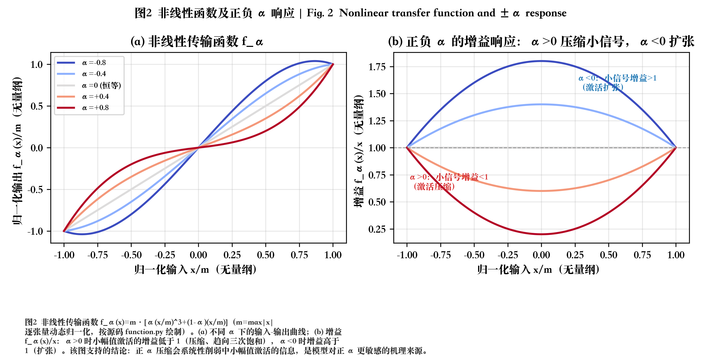
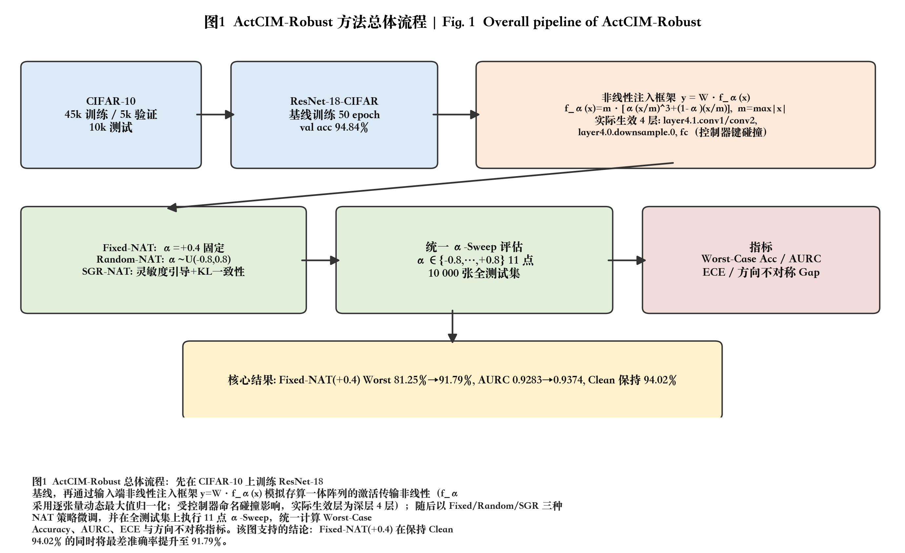
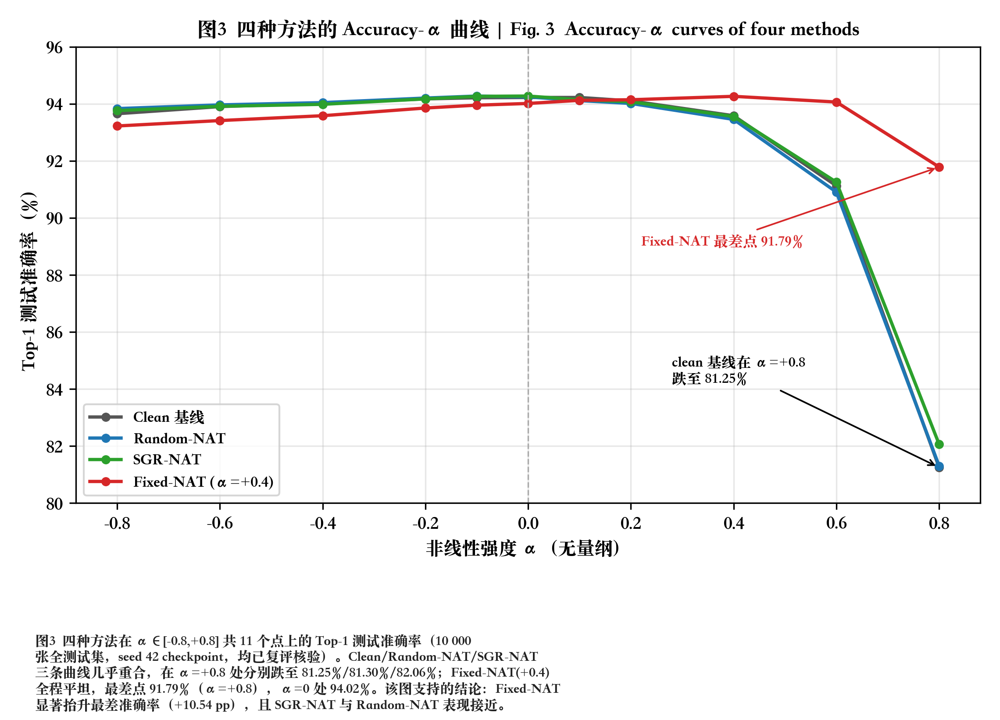
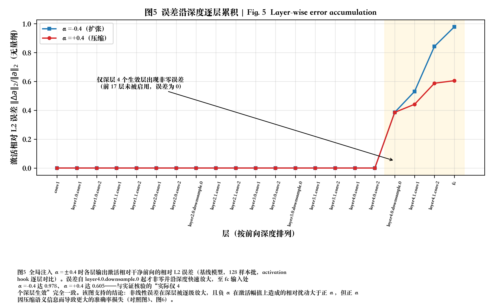
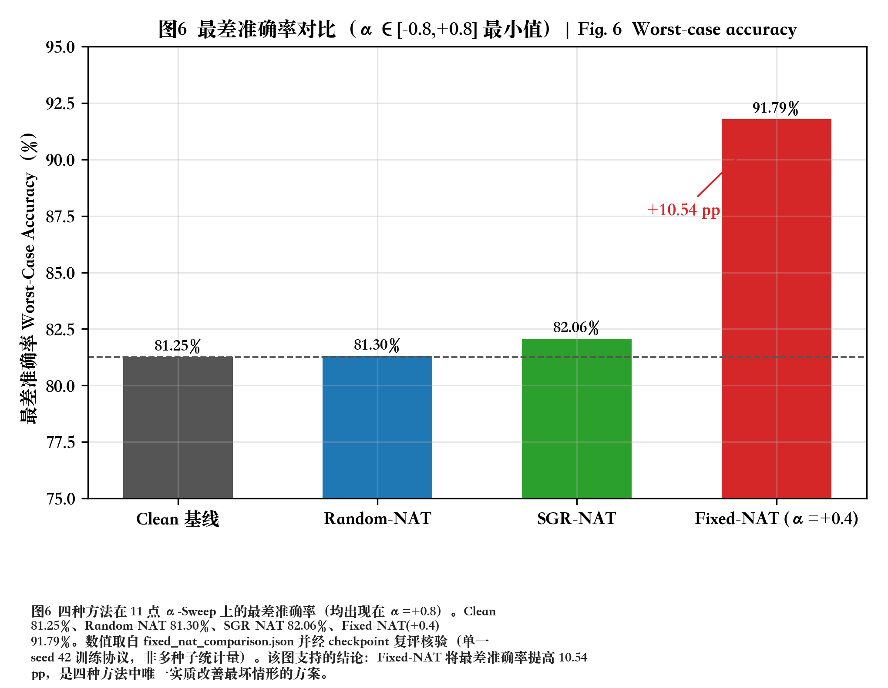
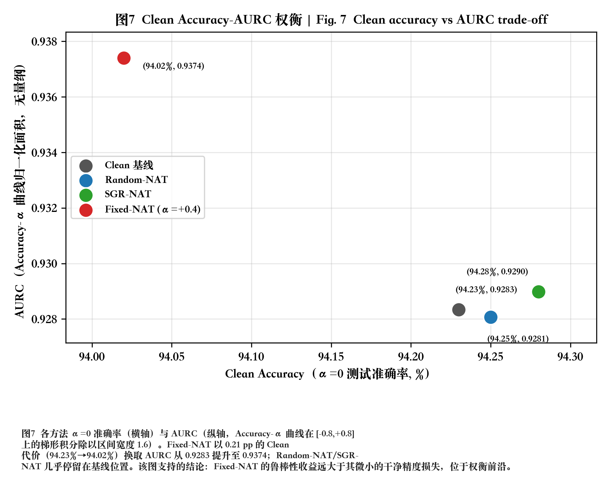
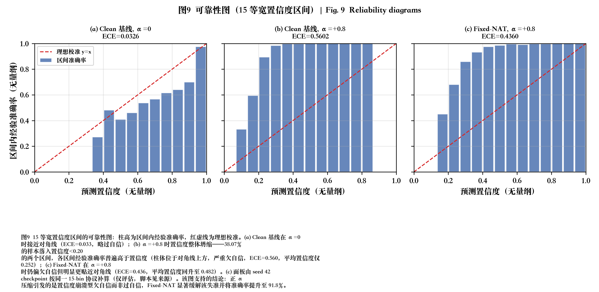
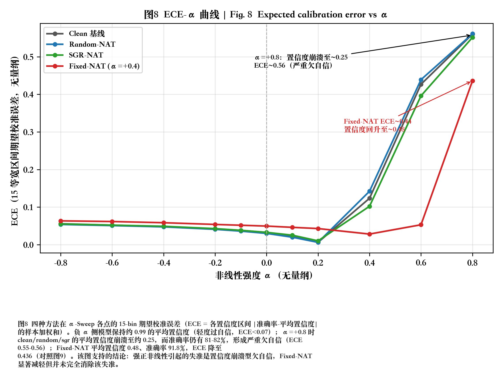
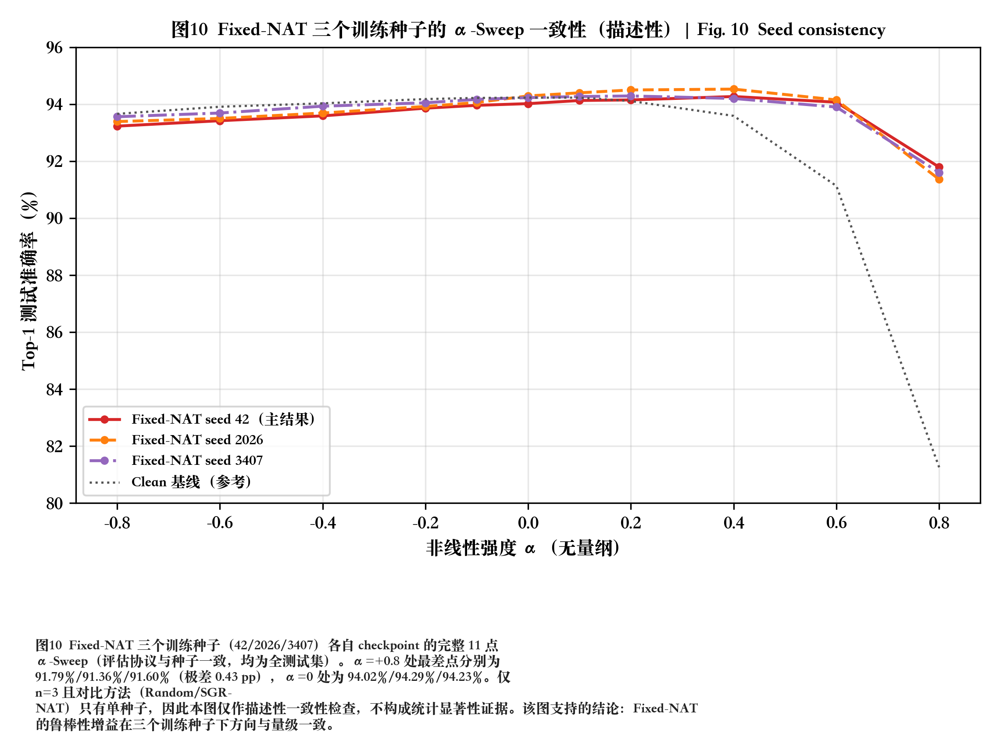

赛题研究汇报 · 演示材料
存算一体芯片中非线性误差
对推理精度的影响研究
ActCIM-Robust：激活非线性建模 · 敏感性分析 · 非线性感知训练 · 鲁棒性增强
81.25% → 91.79%
最差准确率（α=+0.8）
0.9283 → 0.9374
AURC 鲁棒性面积
94.02%
Clean Accuracy 保持
CIFAR-10 / ResNet-18 · 全部数值可由 CSV / 日志 / checkpoint 追溯 · 附结果审计说明
按 → 或 空格 翻页，← 返回，F 全屏
01赛题背景：存储墙与存算一体
核心问题：模拟存算的乘累加呈输入相关的非线性响应，精度退化不可控，需要算法侧增强容忍能力。
- 存储墙瓶颈：冯诺依曼架构下数据在存储与计算单元间频繁搬运，能效与带宽受限
- 存算一体（CIM）：把乘累加下沉到存储器件内部，规避搬运开销，能效比数量级提升
- 代价：模拟器件受输入幅度、温度漂移、工艺偏差干扰 → 乘累加呈非理想非线性
- 赛题目标：分析非线性误差影响（任务1）、非线性感知训练（任务2）、鲁棒性增强方法（任务3）
任务1 敏感性分析 20分
任务2 NAT 训练 20分
任务3 优化创新 20分
拓展研究 10分
技术路线 10分
技术报告 20分
计算单元
ALU / MAC
ALU / MAC
存
储
墙
储
墙
存储单元
DRAM / SRAM
DRAM / SRAM
⇄ 频繁数据搬运：能耗 >60% 消耗在搬运
VS
存算一体阵列：计算在存储原位完成
但模拟链路引入非线性失真 →
但模拟链路引入非线性失真 →
02非线性误差建模：三次多项式映射
单参数 α 统一刻画失真的强度与方向：α>0 压缩正区响应，α<0 反之；α=0 退化为理想线性。
fα(x) = m · [ α·(x/m)3 + (1−α)·(x/m) ]
m = max|x|（逐张量动态归一化）， α ∈ [−0.8, +0.8]
def nonlinearity(x, alpha=0.0):
max_val = x.abs().max()
x = x / max_val
y = alpha * (x**3) + (1 - alpha) * x
return y * max_val- 端点不动：|x|=m 处输出不变，失真集中于中小幅值区
- 小信号增益 1−α：α>0 压缩（增益<1），α<0 扩张（增益>1）
- 处处可导：训练期可直接解析反传，无需 STE
- 注入位置：算子输入端 y = W·fα(x) + b（linear / conv2d / convtranspose2d）

图2：传输函数与增益响应（按源码真实绘制）
03技术路线总览
基线训练 → 非线性注入框架 → 三种 NAT 策略微调 → 统一 11 点 α-Sweep 可追溯评估。
- 数据/模型：CIFAR-10（45k/5k/10k），ResNet-18-CIFAR（11.18M 参数）
- 基线：50 epoch，val acc 94.84%（seed 42）
- 注入框架：可插拔 wrapper + 控制器，逐层/全局 α 可控
- 评估协议：α ∈ [−0.8, +0.8] 共 11 点 × 10000 张全测试集
- 指标：Worst-Case Acc · AURC（梯形积分归一化）· 方向不对称 Gap · ECE

图1：ActCIM-Robust 总体流程（实际生效 4 个深层，见审计页）
04任务1 · 敏感性分析：整网精度衰减趋势
方向高度不对称：正 α 压缩是主导失效方向 —— 基线 α=+0.8 跌至 81.25%，α=−0.8 仍有 93.66%。
- 11 点全区间扫描：负半轴几乎平坦，正半轴 α≥+0.6 后陡降
- 方向不对称差 −3.14 pp（正侧均值低于负侧）
- 机理：压缩把中小幅值激活增益压至 1−α，判别信息被系统性抹除
- 扩张（α<0）扰动幅度更大但保序性好，对 argmax 决策破坏小
| α | −0.8 | 0 | +0.6 | +0.8 |
|---|---|---|---|---|
| 基线 Acc | 93.66% | 94.23% | 91.13% | 81.25% |

图3：Accuracy–α 曲线（10000 张全测试集，checkpoint 已复评核验）
05任务1 · 误差的逐层累积行为
非线性误差沿深度逐级放大：自 layer4.0.downsample.0 起相对 L2 误差 0.386 → fc 输入处高达 0.978。
- activation hook 逐层对比扰动前后输出（全局 α=±0.4，128 样本批）
- 误差跳升路径：downsample 0.386 → conv1 0.531 → conv2 0.843 → fc 0.978（−α）
- 负 α 激活扰动幅度大于正 α（fc 处标准差比 1.97 vs 0.41）却损失更小
- fc 输入处正 α 符号翻转率 10.2%（负 α 仅 3.4%）→ 佐证"压缩破坏判别信息"机理
- 层敏感性排序实验因命名碰撞 + 128 样本分辨率（0.78pp）退化，如实呈现、不作为证据

图5：各层输出激活相对干净前向的相对 L2 误差（按深度排序）
06任务2 · 非线性感知训练（NAT）
三种策略均从基线 checkpoint 微调；Random/SGR 的最佳验证点停在 epoch 0，训练信号被随机化稀释。
Fixed-NAT
- 训练全程固定 α = +0.4
- 直接对齐"最危险方向的中等强度"工作点
- best epoch 9 · val 94.90%
Random-NAT
- 每 batch 采样 α ~ U(−0.5, +0.5) 全局注入
- 期望 α=0，多数 batch 处于低失真区
- best epoch 0 · val 94.82%
SGR-NAT
- 灵敏度引导逐层概率注入 + 课程 α 调度
- 损失 = 扰动 CE + 0.25×干净 CE + KL 一致性（λ=0.5, T=2）
- best epoch 0 · val 94.68%
- 收敛性：Fixed-NAT 5 分钟内收敛且确实学到新表征；Random/SGR 微调 11 epoch 早停、几乎未超过初始点
- 微调 vs 从头训练：微调以极小代价（0.21pp Clean）继承基线泛化能力，是本场景下的高效路径
07任务3 · 鲁棒性增强：Fixed-NAT 核心结果
以 0.21 pp 干净精度代价，最差准确率 +10.54 pp（81.25%→91.79%），AURC 0.9283→0.9374。
| 方法 | Worst Acc | AURC | α=0 |
|---|---|---|---|
| Clean 基线 | 81.25% | 0.9283 | 94.23% |
| Random-NAT | 81.30% | 0.9281 | 94.25% |
| SGR-NAT | 82.06% | 0.9290 | 94.28% |
| Fixed-NAT(+0.4) | 91.79% | 0.9374 | 94.02% |
- AURC⁺（正半轴）0.9128 → 0.9382；负半轴仅轻微让步（0.9399→0.9357）
- 方向不对称差 −0.0314 → +0.0007：正负风险对齐
- 曲线峰值移到 α=+0.4（94.27%）＝训练-部署工作点对齐

图6：四方法最差准确率对比（均出现在 α=+0.8）
08Clean Accuracy – AURC 权衡
Fixed-NAT 位于权衡前沿：鲁棒性收益远大于微小的干净精度损失；Random/SGR 停留在基线附近。
- 横轴：α=0 干净准确率；纵轴：AURC（全区间平均鲁棒性）
- Fixed-NAT：右上移动 —— Clean −0.21pp 换 AURC +0.0091
- Random-NAT / SGR-NAT 与基线的全部指标差异都在千分位量级
- 结论：在部署失真方向明确且近似恒定时，训练预算应集中于该方向的单一工作点，而非摊薄到随机区间

图7：Clean Accuracy 与 AURC 的权衡视图
09拓展研究 · 置信度校准分析
强正 α 引发置信度崩溃型欠自信（conf 0.25 / acc 81%）——与常见"过自信"方向相反；Fixed-NAT 显著缓解。
- α=+0.8（clean）：平均置信度崩至 0.252，准确率 81.25%，ECE 0.560
- 压缩使 logit 幅值整体缩小 → softmax 趋于均匀 → 模型"不敢确定"
- 负 α 侧仅轻度过自信（conf≈0.99，ECE 0.05–0.07）
- Fixed-NAT：conf 回升至 0.482，ECE 降至 0.436；训练点 α=+0.4 处 ECE 仅 0.028
- 安全含义：欠自信方向对拒识/降级决策保守，但强失真区仍需温度缩放等后校准

图9：15-bin 可靠性图（柱体高于对角线 = 欠自信）
10拓展研究 · ECE–α 全景与消融
训练期 α 分布是决定因素：恒定 +0.4 全面优于随机化分布 —— 确定性方向失真 ≠ 零均值噪声。
| 训练 α 分布 | Worst | AURC |
|---|---|---|
| 无（基线） | 81.25% | 0.9283 |
| U(−0.5,+0.5) 全局 | 81.30% | 0.9281 |
| 灵敏度引导逐层 | 82.06% | 0.9290 |
| 恒定 +0.4 | 91.79% | 0.9374 |
- 随机注入期望为 0，训练信号被稀释（best_epoch=0 互证）
- 与"高斯噪声注入普遍有效"的直觉相反：本扰动是确定性方向性失真

图8：四方法 15-bin ECE 随 α 的变化
11结果审计与可追溯性
每个数字可回溯到唯一 CSV 行与 checkpoint；审计实证锁定头条数字来自 seed 42，并限定扰动口径。
- seed 口径定论：4 个 checkpoint 全测试集复评，α=0 指纹（0.9402）唯一匹配 seed 42 → 解决"推荐模型 seed 2026 vs 推荐路径 seed 42"不一致
- 注入范围实证：控制器命名碰撞使实际生效层为深层 4 层（4/21），训练评估同口径 → 对比公平，结论限定为"深层非线性扰动模型"
- 多种子表述：Fixed-NAT 三种子 Worst 91.36%–91.79%（描述性一致）；对比方法单种子，不宣称统计显著性
- 校准方向更正：由"过自信"更正为置信度崩溃型欠自信（signed gap 全为负）

图10：Fixed-NAT 三个训练种子的完整 α-Sweep（描述性一致性）
12结论与局限性
深层激活非线性下，Fixed-NAT 是唯一实质有效的策略；全部结论限定于已实证的扰动口径。
三大结论
- 正 α 压缩为主导失效方向，根源是判别信息破坏而非扰动幅度
- Fixed-NAT(+0.4)：Worst +10.54pp、AURC 0.9374、Clean 94.02%，全面优于 Random/SGR
- 强压缩引发欠自信崩溃，Fixed-NAT 将 ECE 0.560 → 0.436
局限与后续工作
- 注入范围为深层 4 层（4/21），全层注入需修复命名碰撞后复验
- 除 Fixed-NAT（n=3 描述性）外单训练种子，无显著性检验
- 仅 CIFAR-10 / ResNet-18 / 单一非线性族；未耦合量化误差与器件噪声
- 后续：真全层注入 · 多种子重复 · 真实 CIM 硬件在环验证
13交付物与评分对应
论文（MD/DOCX/PDF）+ 12 页 PPT + 10 张 300DPI 图 + BibTeX + 审计说明，全流程脚本可一键复现。
| 交付物 | 位置 |
|---|---|
| 设计报告（20页 PDF + DOCX + MD） | reports/final/ActCIM_Robust_paper_final.* |
| 介绍 PPT（12 页可编辑） | reports/final/ActCIM_Robust_slides.pptx |
| 论文级图片（10 张 ×PNG+PDF） | results/figures/paper_final/ |
| 参考文献（18 条 BibTeX） | reports/final/references.bib |
| 结果审计说明 | reports/final/result_audit_statement.md |
| 评分模块 | 本项目覆盖 |
|---|---|
| 任务1 敏感性分析（20） | 11 点 sweep · 方向不对称 · 逐层累积 |
| 任务2 NAT 分析（20） | 三策略对比 · 收敛性 · 微调路径 |
| 任务3 优化创新（20） | Fixed-NAT 工作点对齐 +10.54pp |
| 拓展研究（10） | 校准分析 · 随机 vs 确定性失真机制 |
| 技术路线 / 报告（30） | 可追溯协议 + 完整审计链 |
谢谢观看 · ActCIM-Robust